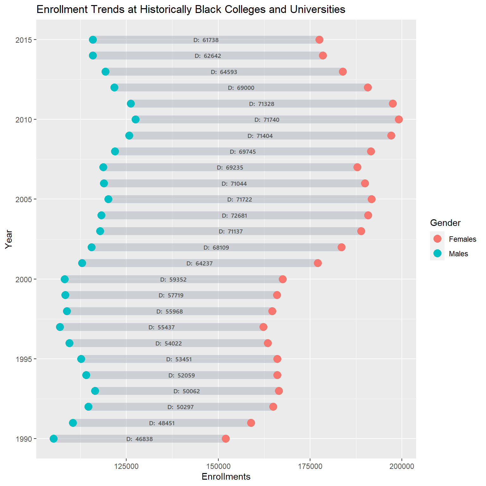
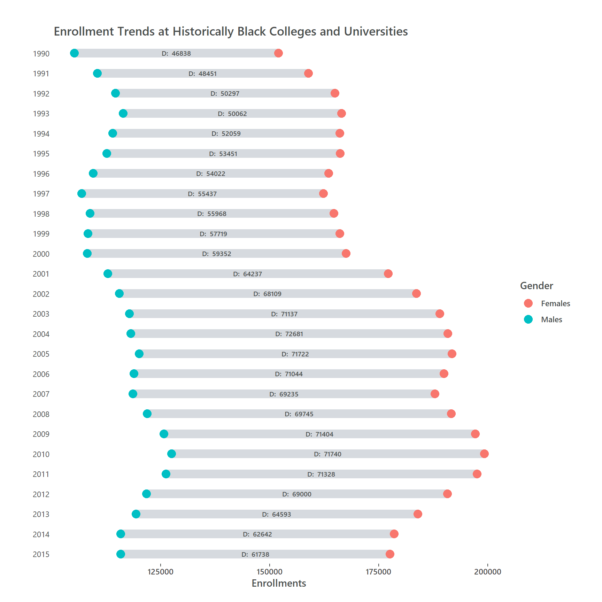
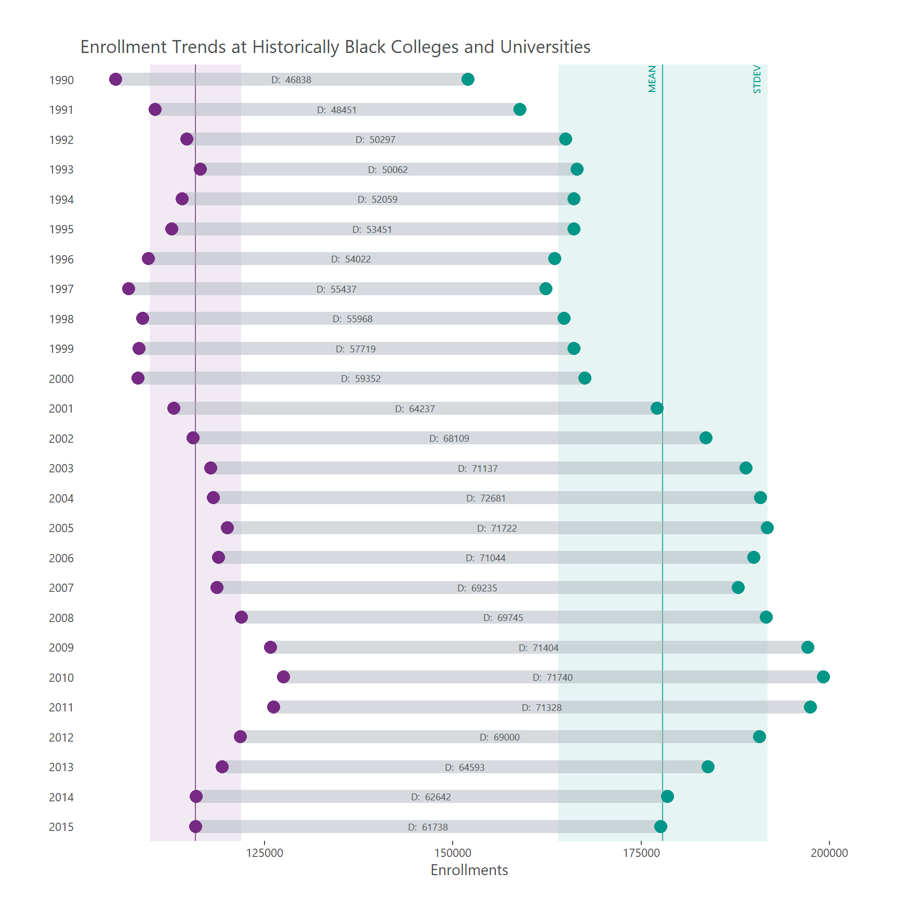
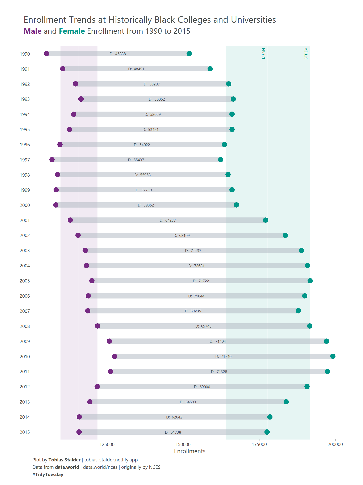

About
This article showcases a novel approach to the dumbbell plot created by Tobias Stalder, a geographer and datavisualization specialist based in Switzerland. You can find updates on his recent work on Twitter, LinkedIn and github.
Note that you can find the original R script in this TidyTuesday github repository.
Suggested citation:
Stalder, T., Holtz, Y. (2021): Extended Dumbbell Plot in R with ggplot2.
R graph gallery. Access:
r-graph-gallery.com/web-extended-dumbbell-plot-ggplot2.html.
Date: DD-MM-YYYY.
Libraries
The extrafont package is used to import additional fonts.
If you are unfamiliar with this package, you need to run the following
commands to load and import the fonts (Takes a while!)
Dataset
The data for this plot was retrieved from TidyTuesday, a weekly datavisualisation challenge on twitter. You can read more about the data here and visit this github repository to learn more about TidyTuesday. The dataset is about enrollments in historically black colleges and universities (HBCUs).
You can load the data by running the following line:
hbcu_all <- readr::read_csv('https://raw.githubusercontent.com/rfordatascience/tidytuesday/master/data/2021/2021-02-02/hbcu_all.csv')Next, we will look at the data. We see a yearly resolution of enrollments in different categories.
Console output:
# A tibble: 6 x 12
Year `Total enrollme~ Males Females `4-year` `2-year` `Total - Public`
<dbl> <dbl> <dbl> <dbl> <dbl> <dbl> <dbl>
1 1976 222613 104669 117944 206676 15937 156836
2 1980 233557 106387 127170 218009 15548 168217
3 1982 228371 104897 123474 212017 16354 165871
4 1984 227519 102823 124696 212844 14675 164116
5 1986 223275 97523 125752 207231 16044 162048
6 1988 239755 100561 139194 223250 16505 173672
# ... with 5 more variables: `4-year - Public` <dbl>, `2-year - Public` <dbl>,
# `Total - Private` <dbl>, `4-year - Private` <dbl>, `2-year - Private` <dbl>Data wrangling I
For the example plot, I focused on the enrollment between two genders
from 1990 onwards. So we use the dplyr package to conduct a
first data wrangling step, getting a small dataset which contains data
on male and female enrollments per year and the numeric difference
between them.
hbcu_all %>%
filter(Year >= 1990) %>% #filter the year
select(Year, Males, Females)%>% #select columns of interest
mutate(diff = Females - Males) %>% #calculate difference
pivot_longer(cols = c(Males, Females)) %>% #get into long format
rename(Gender = name, #rename columns
Enrollments = value)-> dat_gender
head(dat_gender)Console output:
# A tibble: 6 x 4
Year diff Gender Enrollments
<dbl> <dbl> <chr> <dbl>
1 1990 46838 Males 105157
2 1990 46838 Females 151995
3 1991 48451 Males 110442
4 1991 48451 Females 158893
5 1992 50297 Males 114622
6 1992 50297 Females 164919In order to plot the range between the two groups later on, we need two tibbles which are only holding the data of 1 gender each.
Males <- dat_gender %>%
filter(Gender == "Males")
Females <- dat_gender %>%
filter(Gender == "Females")
head(Females)Console output:
# A tibble: 6 x 4
Year diff Gender Enrollments
<dbl> <dbl> <chr> <dbl>
1 1990 46838 Females 151995
2 1991 48451 Females 158893
3 1992 50297 Females 164919
4 1993 50062 Females 166459
5 1994 52059 Females 166065
6 1995 53451 Females 166088This data is all we need to create a basic dummbell plot.
The basic dumbbell plot
Now we can use the ggplot2 package to plot a basic dumbbell
plot. The geoms that we are going to use are
geom_point() for the groupwise points and
geom_segment() to create a visible connection between the
two group entries per year.
p <- ggplot(dat_gender)+
geom_segment(data = Males,
aes(x = Enrollments, y = Year,
yend = Females$Year, xend = Females$Enrollments), #use the $ operator to fetch data from our "Females" tibble
color = "#aeb6bf",
size = 4.5, #Note that I sized the segment to fit the points
alpha = .5) +
geom_point(aes(x = Enrollments, y = Year, color = Gender), size = 4, show.legend = TRUE)+
ggtitle("Enrollment Trends at Historically Black Colleges and Universities")
p

Data wrangling II for extension
To plot the extended version of this viz, we need to add the labels on the range and the line and shading for mean and standard deviation per group. So first, we further wrangle the data to calculate the mean +/- 1 standard deviation per group over all years and then create 2 separate tibbles, 1 for each group.
dat_gender %>%
group_by(Gender) %>%
summarise(mean = mean(Enrollments),
SE = sd(Enrollments)) %>%
mutate(meanpos = mean + 1 *SE,
meanneg = mean - 1 *SE)-> stats
stats_males <- stats %>%
filter(Gender == "Males")
stats_females <- stats %>%
filter(Gender == "Females")
head(stats)Console output:
# A tibble: 2 x 5
Gender mean SE meanpos meanneg
<chr> <dbl> <dbl> <dbl> <dbl>
1 Females 177866. 13908. 191774. 163958.
2 Males 115789. 6065. 121854. 109724.As for the labels on the range, we need a tibble that holds the difference between the groups per year and a column indicating the position of the label.
diff <- dat_gender %>%
filter(Gender == "Males") %>% #you can chose Males of Females, doesn't matter
mutate(x_pos = Enrollments + (diff/2)) #x position of label (Enrollment value of Males + diff/2)
head(diff)Console output:
# A tibble: 6 x 5
Year diff Gender Enrollments x_pos
<dbl> <dbl> <chr> <dbl> <dbl>
1 1990 46838 Males 105157 128576
2 1991 48451 Males 110442 134668.
3 1992 50297 Males 114622 139770.
4 1993 50062 Males 116397 141428
5 1994 52059 Males 114006 140036.
6 1995 53451 Males 112637 139362.I’m pretty sure that the data wrangling can be improved at this point, so feel free to create a pull request in my github repository if you feel like contributing.
Building up the extension
Add labels on point range
In a first step, we add the labels on the ranges using our
diff tibble and geom_text().
p +
geom_text(data = diff,
aes(label = paste("D: ",diff), x = x_pos, y = Year), #note thatI changed the greek letter Delta to "D:" because of encoding reasons
fill = "white",
color = "#4a4e4d",
size = 2.5,
family = "Segoe UI Semibold") -> p_labelled
p_labelled
Add facet & theme
To have more control over the spacing between the line-ranges we add a
facet on the y axis. Since this will look horrible, we add
some theme() specifications to set the angle of the facet
strip texts and add some styling.
p_labelled +
#add facet for more control
facet_grid(Year ~ ., scales = "free", switch = "y") +
#theming
theme_minimal()+
theme(panel.grid.major.y = element_blank(),
panel.grid.minor.y = element_blank(),
panel.grid.major.x = element_blank(),
panel.grid.minor.x = element_blank(),
axis.title.y = element_blank(),
axis.text.y = element_blank(),
axis.ticks.y = element_blank(),
axis.ticks.x = element_line(color = "#4a4e4d"),
text = element_text(family = "Segoe UI Semibold", color = "#4a4e4d"),
strip.text.y.left = element_text(angle = 0),
panel.background = element_rect(fill = "white", color = "white"),
strip.background = element_rect(fill = "white", color = "white"),
strip.text = element_text(color = "#4a4e4d", family = "Segoe UI"),
plot.background = element_rect(fill = "white", color = "white"),
panel.spacing = unit(0, "lines"),
plot.margin = margin(1,1,.5,1, "cm"))-> p_ext_facetted
p_ext_facetted
Next, we place two small text annotations for mean and standard
deviation so the reader knows what this is about. In the same step, we
can define the point colors with `scale_color_manual(). We
add the mean and standard deviation per gender group using
geom_vline() and geom_rect() We add this
before the rest of the plot because we want the
point-ranges to be on top of it. We also add 2 text annotations for mean
and standard deviations with annotate().
Add mean and standard deviation
ggplot(dat_gender)+
#add mean and standard deviation for both groups
geom_rect(xmin = stats_males$meanneg, xmax = stats_males$meanpos,
ymin = 2016, ymax = 1989, fill = "#762a83", alpha = .05)+
geom_vline(xintercept = stats_males$mean, linetype = "solid", size = .5, alpha = .8, color = "#762a83")+
geom_rect(xmin = stats_females$meanneg, xmax = stats_females$meanpos,
ymin = 2016, ymax = 1989, fill = "#009688", alpha = .05)+
geom_vline(xintercept = stats_females$mean, color = "#009688", linetype = "solid", size = .5, alpha = .8) +
#add point range
geom_segment(data = Males, aes(x = Enrollments, y = Year, yend = Females$Year, , xend = Females$Enrollments),
color = "#aeb6bf", size = 4.5, alpha = .5) +
#add points
geom_point(aes(x = Enrollments, y = Year, color = Gender), size = 4, show.legend = FALSE) +
#color points
scale_color_manual(values = c("#009688","#762a83"))+
#add point-range labels
geom_text(data = diff, aes(label = paste("D: ",diff), x = x_pos, y = Year), fill = "white", color = "#4a4e4d", size = 2.5, family = "Segoe UI") +
#add annotations for mean and standard deviations
geom_text(x = stats_females$mean - 1500, y = 1990, label = "MEAN", angle = 90, size = 2.5, color = "#009688", family = "Segoe UI")+
geom_text(x = stats_females$meanpos -1500, y = 1990, label = "STDEV", angle = 90, size = 2.5, color = "#009688", family = "Segoe UI")+
#add facets for more control
facet_grid(Year ~ ., scales = "free", switch = "y") +
#add title
ggtitle("Enrollment Trends at Historically Black Colleges and Universities")+
#theming
theme_minimal()+
theme(panel.grid.major.y = element_blank(),
panel.grid.minor.y = element_blank(),
panel.grid.major.x = element_blank(),
panel.grid.minor.x = element_blank(),
axis.title.y = element_blank(),
axis.text.y = element_blank(),
axis.ticks.y = element_blank(),
axis.ticks.x = element_line(color = "#4a4e4d"),
text = element_text(family = "Segoe UI", color = "#4a4e4d"),
strip.text.y.left = element_text(angle = 0),
panel.background = element_rect(fill = "white", color = "white"),
strip.background = element_rect(fill = "white", color = "white"),
strip.text = element_text(color = "#4a4e4d", family = "Segoe UI"),
plot.background = element_rect(fill = "white", color = "white"),
panel.spacing = unit(0, "lines"),
plot.margin = margin(1,1,.5,1, "cm")) -> p_styled
p_styled
Finish plot with ggtext
In a final step we the subtitle and caption using
element_markdown() from the ggtext package.
This is the final code which will produce the extended dumbbell plot:
p_styled +
#add subtitle and caption
labs(subtitle = "<span style = 'color: #762a83;'>**Male**</span> and <span style = 'color: #009688;'>**Female**</span> Enrollment from 1990 to 2015<br>",
caption = "Plot by **Tobias Stalder** | tobias-stalder.netlify.app<br>Data from **data.world** | data.world/nces | originally by NCES<br>**#TidyTuesday**")+
#add theming for title, subtitle, caption
theme(plot.caption = element_markdown(hjust = 0, lineheight = 1.5),
plot.subtitle = element_markdown(size = 14, hjust = -.06),
plot.title = element_text(size = 16, hjust = -.14)) -> p_fin #Note that hjust of title and subtitle depend on the export dimensions
p_fin